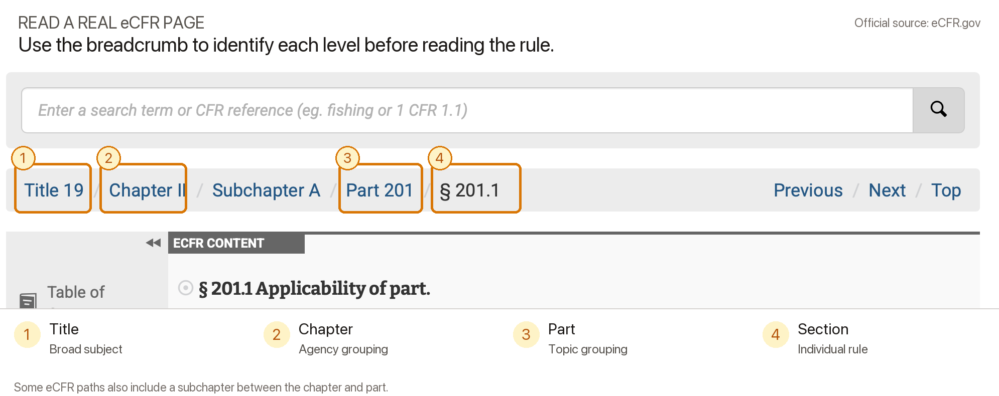

Lesson 0001
Title 19 Navigation Lesson
Learn the map first, then test recall. This lesson teaches GTC certification students how to read CFR structure and recognize key Title 19 parts.
Use eCFR during study, but do not train yourself to depend on live search during the exam.
What you are learning
The CFR is a map, not a pile of rules
The winning move is to identify the level of the map before hunting for the exact words.

Worked example
Read 19 CFR 24.1(a) by level
The reading habit is simple: say the levels out loud in order. Title, Part, Section, Paragraph. That keeps you from treating every number as the same kind of number.
Before the quiz
Carry the method, not an answer list
The practice begins without a pre-filled list of the tested part numbers. Explanations appear only after you answer.
Study method
How to use this page
- Follow the hierarchy image once from left to right.
- Cover the worked example and say the citation levels back from memory.
- Take the quiz without using eCFR.
- Read the feedback only after answering, then retry later for storage strength.
Practice quiz
Answer from memory first. After each choice, the feedback explains the navigation cue and the official-source basis.
Sources and scope
This lesson is for study and certification prep. It is not legal advice.
Primary source: eCFR Title 19 - Customs Duties. Structure and Sections 201.1, 24.1, and 11.1 were verified against the current eCFR. The annotated interface image was captured from the official Section 201.1 page on 2026-07-09.
Review the Title 19 reference map after the practice quiz.
Ask your instructor or the agent a follow-up if a citation pattern, part label, or exam constraint is unclear.